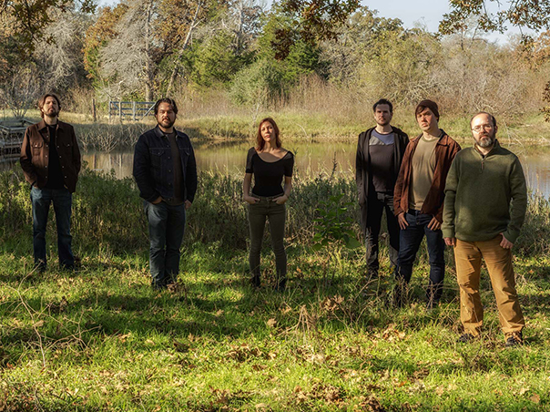
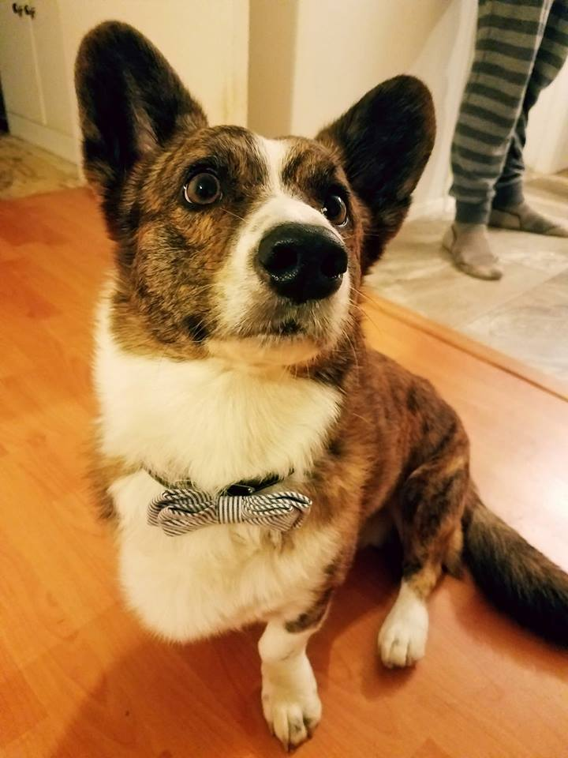

About Me
I'm a web designer living in Austin, Texas. I have a passion for music, third wave coffee, and Cardigan Welsh Corgis. In addition to general frontend development, I specialize in UI and responsive design. I'm particularly interested in working with musicians and other creative individuals to bring their passions to life.

I hold a Web Developer Certificate from Austin Community College, and I have my Master's and Bachelor's Degrees in German Studies from Michigan State University and The University of Texas at Austin, respectively. I have several years experience with html5, css3, and JavaScript, and I customized and designed a Zendesk help site at my current job. I'm also helping with the implementation of our new NetSuite eCommerce site. More recently, I've been working with JQuery, PHP, and WordPress.

I play in a local progressive rock band called Proud Peasant. We released our debut album, Flight, to considerable acclaim in 2014, and it sold over 500 copies across the world. We released a vinyl 7" single entitled Cosmic Sound on noted UK label Fruits de Mer Records in 2016. We were reviewed in print magazines Classic Rock Magazine, Prog, and Shindig, and we had a track featured on BBC Radio. We're currently working on recording our second album, entitled Communion.

I spend the majority of my free time hanging out with my wife and stepson and our two pets: Walter the Cardigan Welsh Corgi and Oreo the cat. My stepson, Joseph, will be attending Cornell University next year, and I couldn't be prouder. Hobbies include watching old and/or arty movies, reading fantasy novels and a variety of comic books, playing fantasy RPGs, such as the Ultima and Dragon Age series, and taking long walks. I also enjoy watching a variety of sports, especially the Texas Longhorns and the Michigan State Spartans, but also pro football, basketball, hockey, soccer, and a little baseball.